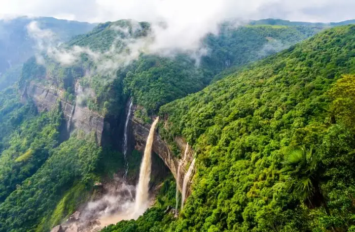
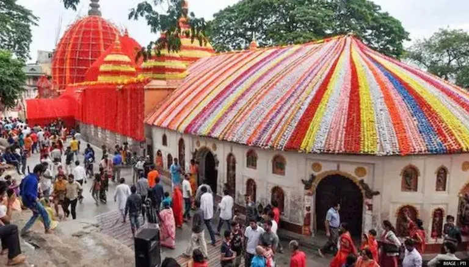
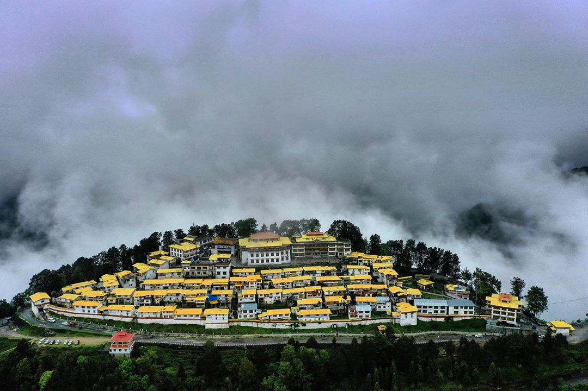

Cherrapunji
Cherrapunji is one of the sun’s wettest areas. The place’s pristine and clean atmosphere makes it a great choice to just sit back and relax.

Kamakhya Temple.
Maa Kamakhya is the renowned Goddess of Desire whose famous shrine is located in the heart of Nilachala Hill situated in the western part of Guwahati.

Tawang
Tawang is the land of the Monpas, a multi-colored canvas decorated with white-brown and green strokes.